从南来了一群鹅 拧头拐膀要过河 有的像跳八雷舞 有的像是血管堵 最后一只更好看 好似酒后一醉汉[尬笑][尬笑][尬笑][尬笑]
最后一个是打了5针科兴疫苗的[捂脸][捂脸]
谁养像谁[捂脸][捂脸][捂脸]
对不起，只能帮这么点。因为我现在也是无能为力，在带儿子化疗骨髓移植打怪兽。希望小姑娘和我的小宝都能早日康复[爱心][爱心][爱心] 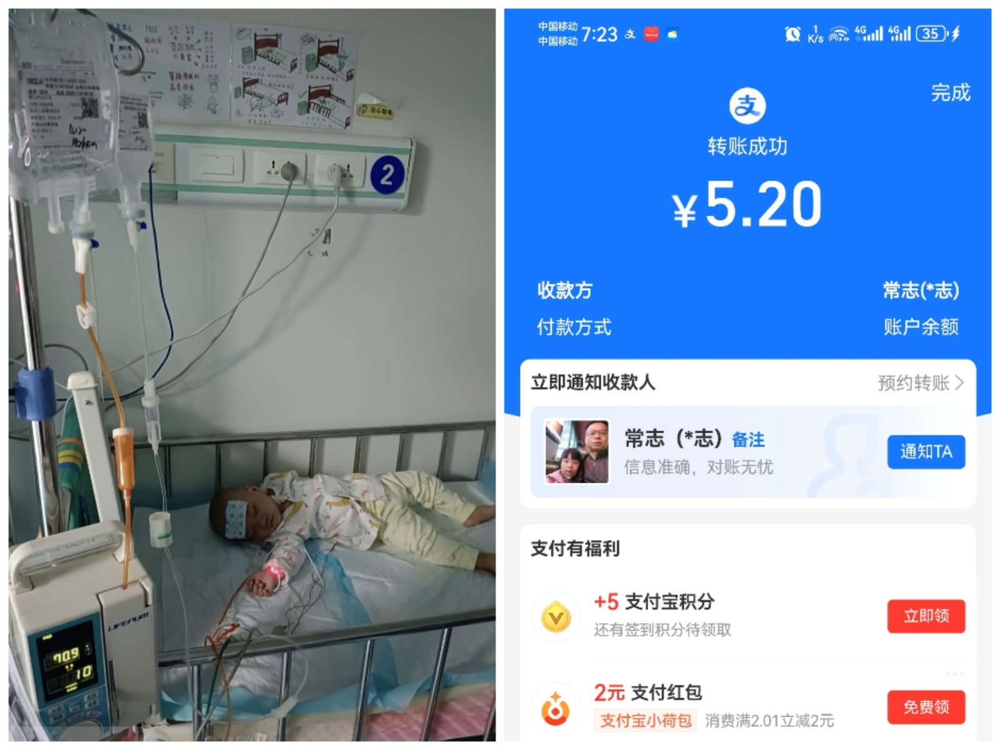
你直播卖货吧，哪怕卖砒霜，我也给我领导买一斤，让他泡茶喝[流泪][流泪]
喝自己的胆汁续命！心疼死了这个小天使！加油[流泪][流泪][流泪][流泪] 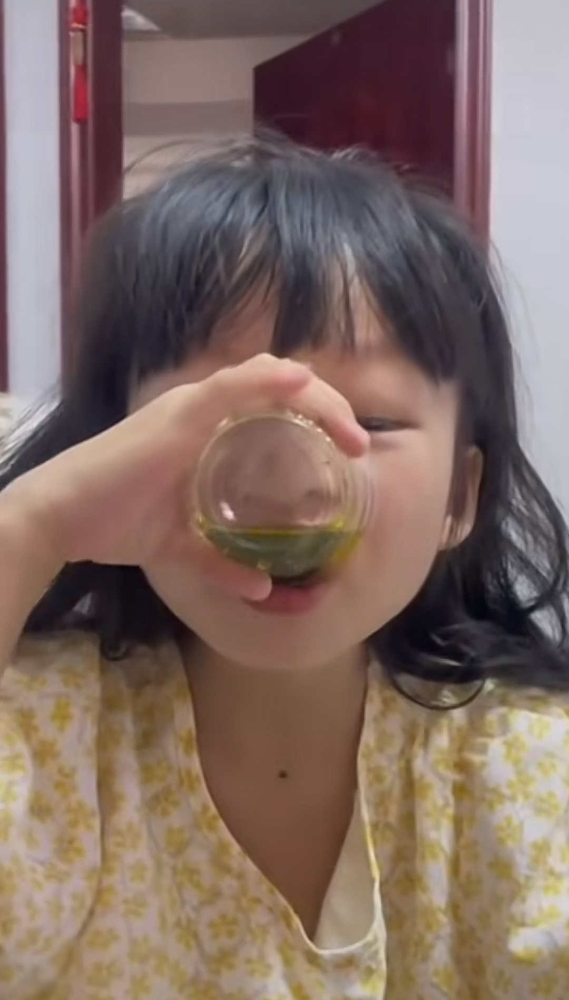
感谢子衿老师的画和帮助，我们坚持下去，我们会越来越好的，感恩遇见，感谢大家[感谢][感谢][感谢] 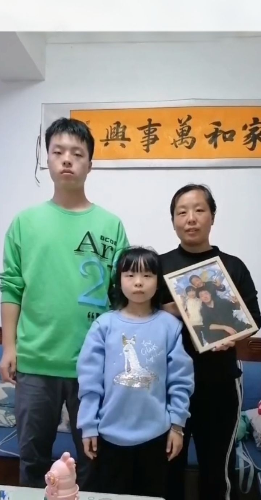
微薄之力，希望一切安好[玫瑰] 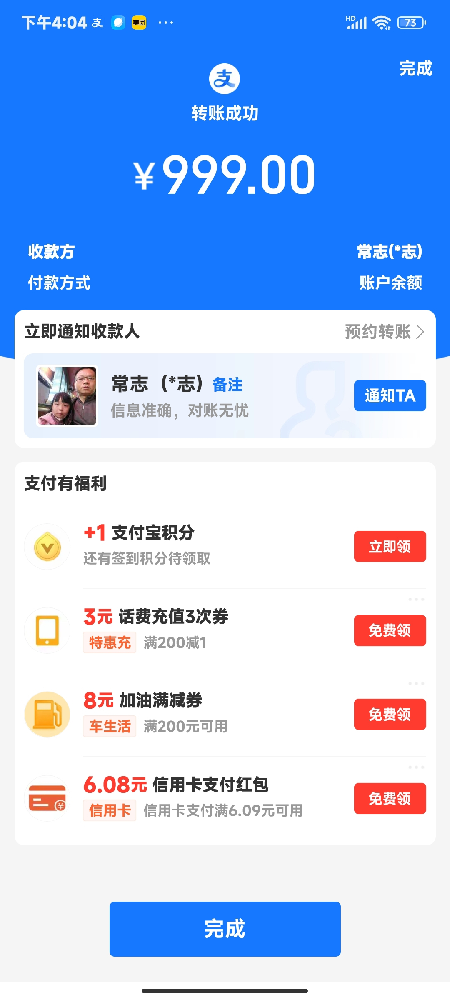
自己就7万多，就捐了5万多，剩了2万多，真的太感动了[流泪][流泪][流泪][流泪] 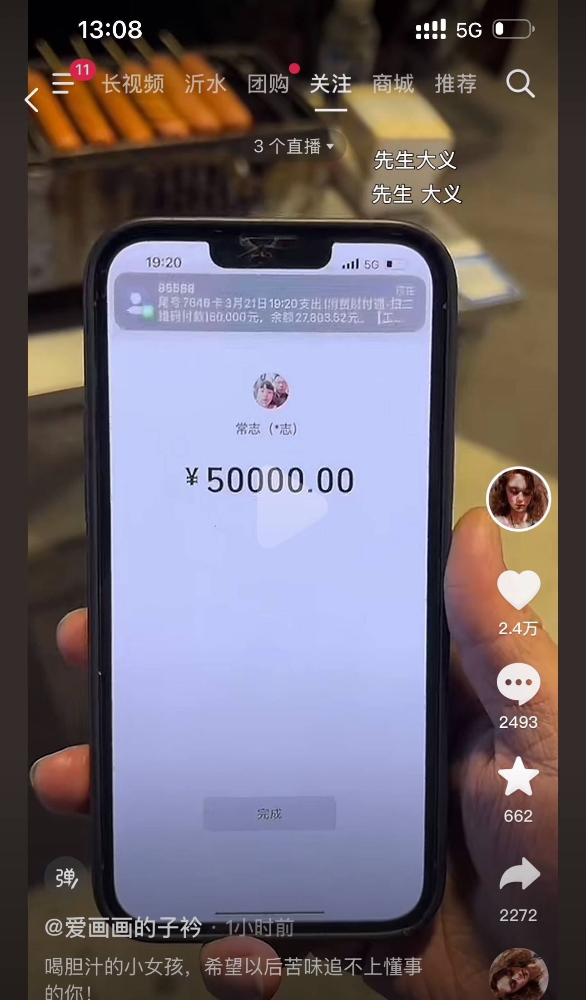
我想到是500，最多想到是1000，我以为是5000，没想到最后是50000.先生大义！[赞]
给我看感动了，我决定不带儿子去做亲子鉴定了😭😭
爱画画的子衿老师你好，我是孩子的妈妈，孩子是先天基因罕见病+双侧神经耳聋+脑瘫+右手臂丛神经受损，5岁多了认知和运动只有几个月大，希望大家可以关注到我家宝贝，作为妈妈真的好心疼自己的孩子 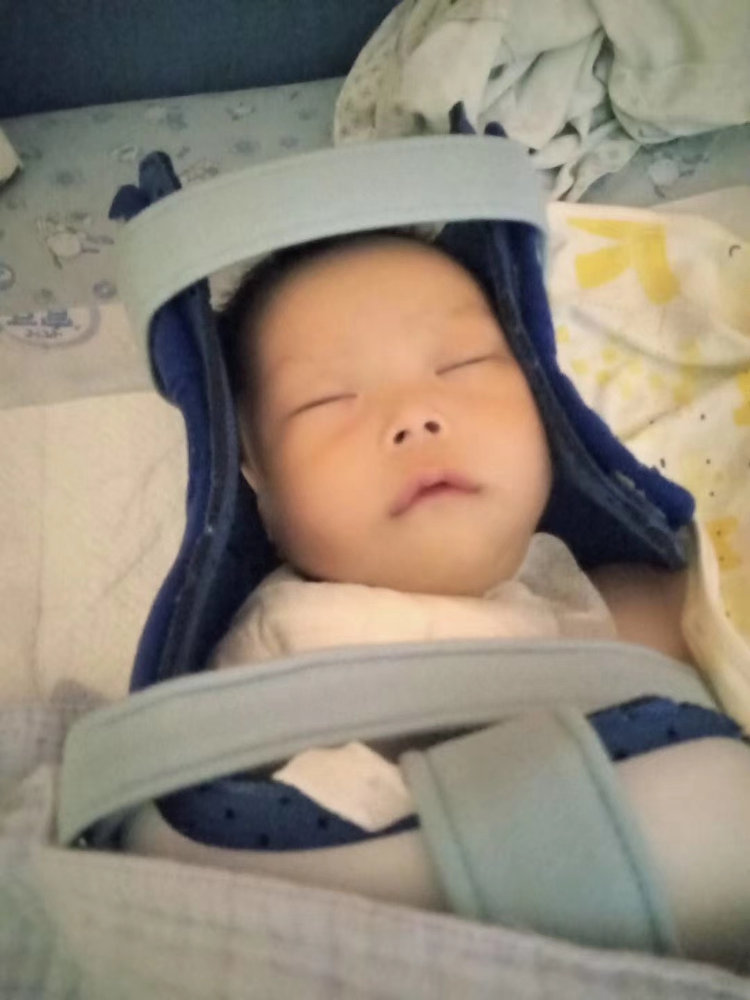
听妈妈说孩子喝自己的胆汁眼泪一下就出来了
我是一个被确诊511天“布加综合症肝硬化腹水”20岁女孩，每年做4场手术，爸妈在外地挣苦力钱给我治病，我每年一个人从广西去徐州做手术，这种病真的很难治好[流泪][流泪][流泪] 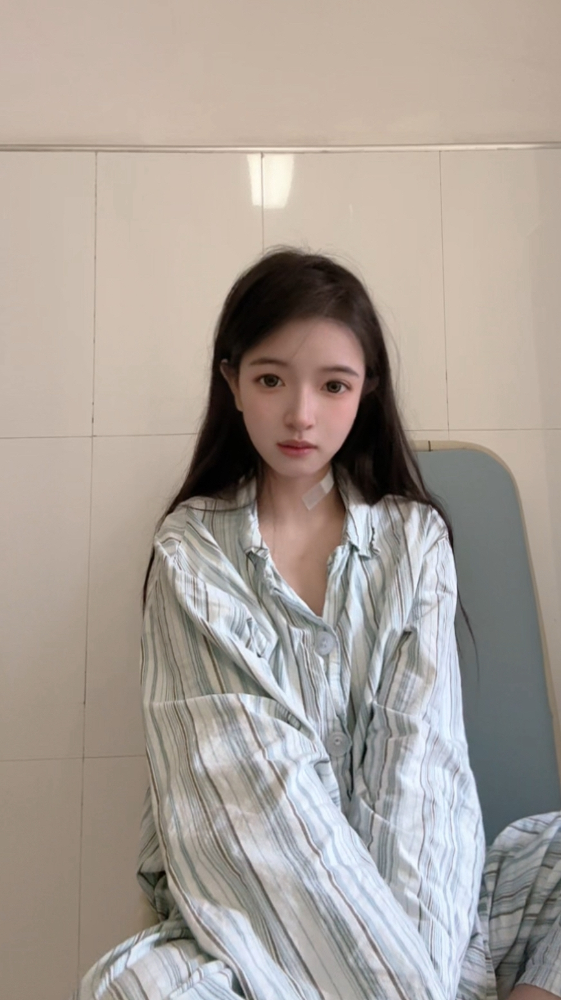
哥，你直播带货吧，哪怕是棺材，我高低给我领导整上一副。[舔屏]
高低得炫耀一下 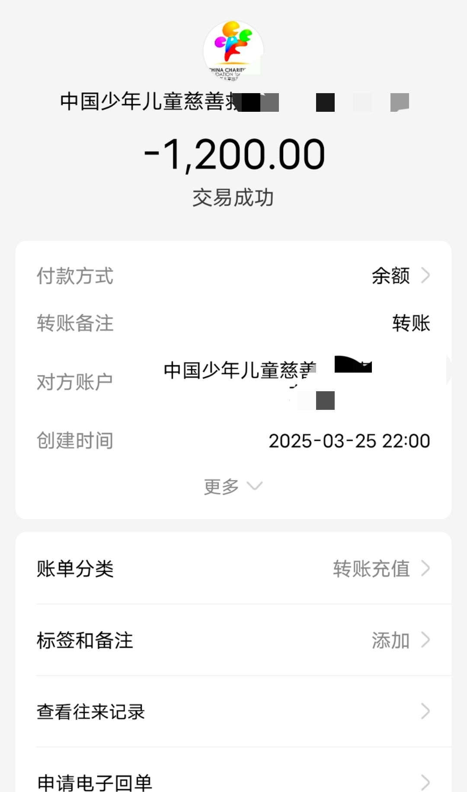
没事的儿子，你的大鹅同学以后再也嘲笑不了你了[憨笑] 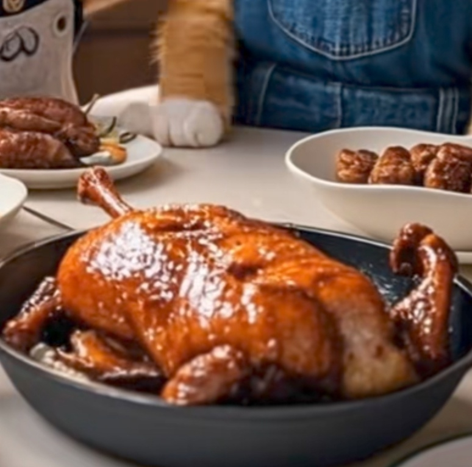
慢慢的，嘲笑你的同学也会变少
我的抖音怎么这么难看
没事的大橘，我已经把他抓了[憨笑] 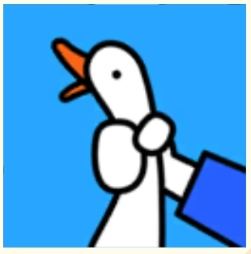
一边哭一边把碗给吃了哈哈哈哈哈哈哈 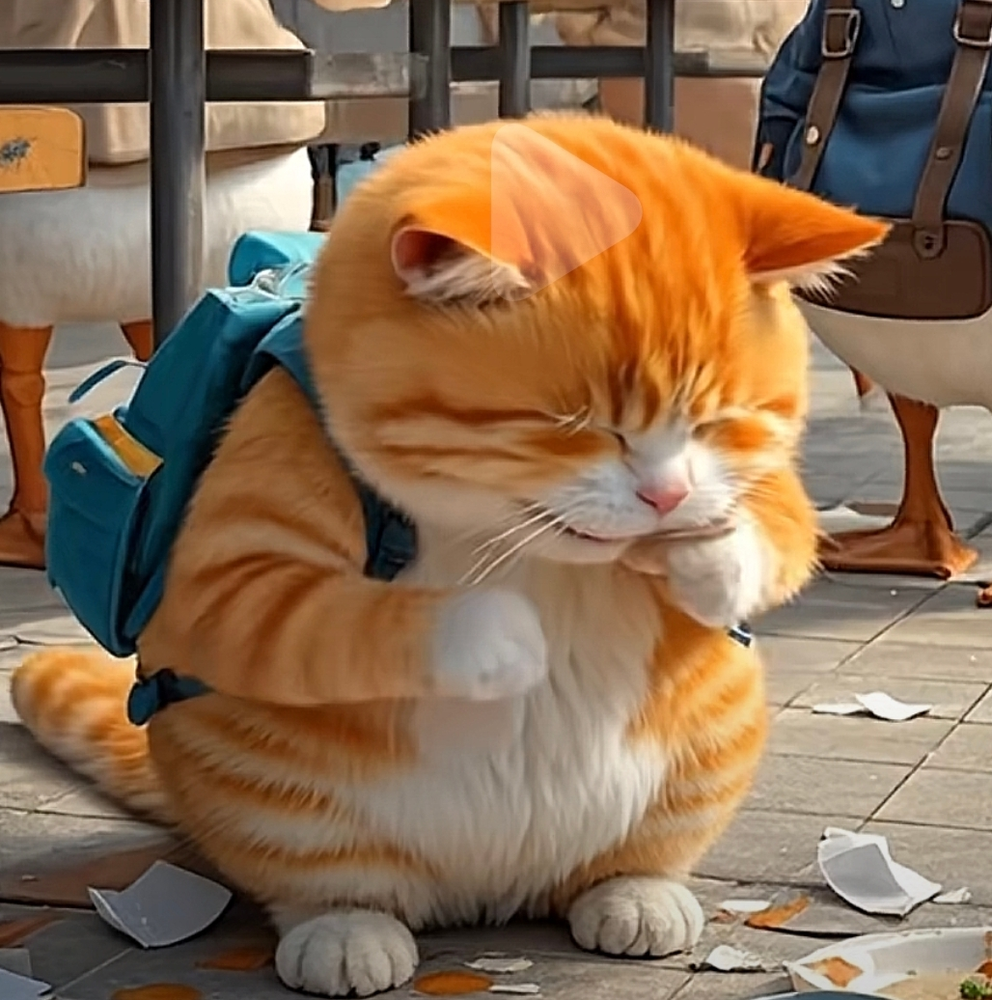
谁有大鹅的抖音号
从来没有改过自新[尬笑]，只是为了吃更多朋友暂时低头而已
已开户 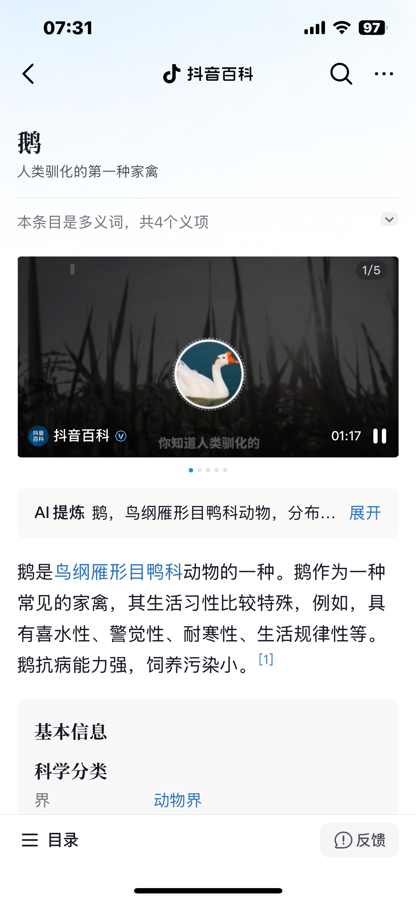
小橘从此以后每天在学校吃同学[奸笑]
我就搞不清，这是天生的吗[捂脸][捂脸][赞][赞][呲牙][呲牙][呲牙][呲牙]
前面那些大人没一个跳得他好，叫他领舞得了，[呲牙]
以爱之名 你还愿意吗[流泪]
小时候就喜欢周深唱的[赞]现在喜欢买辣椒也用券那个版本
给我周深调成女的了[捂脸]
以爱之名 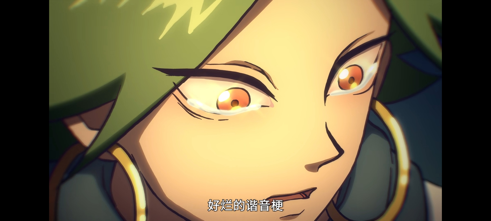
给我们周深老师的声音加的太细了[尬笑]
之前一直get不到周深看到这个视频我突然get到了[发呆]
原来焦虑的气味是酸酸的
我家狗在我哭的喘不上气的时候，把球甩着摔我脑袋上了……
我家狗也说我酸酸的，但他说我不是焦虑味，是穷酸
小熊毛好潦草[逞强落泪]一定经受了很多，辛苦掌门和林克照顾了[逞强落泪][逞强落泪][逞强落泪][逞强落泪]
小动物真的有思想的，超级可爱。我养的珍珠鸟，吃惯了蛋小米就不爱吃普通小米了。看他们食欲不好我只能给它们做，拿空气炸锅做的时候香味飘出来，它们就蹦出来站在杆子上 很期待，很馋，笑死我了
[捂脸] 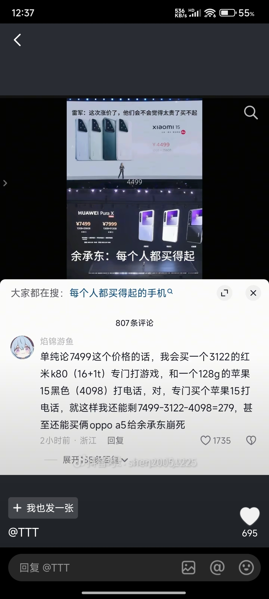
7499够我vivo全家桶了堆料还足
奶贝，骑着电动车就跨省了[赞]
欧乐堡:宣传就叫泉城欧乐堡，出事就叫德州某大型游乐场
人们都在嘲笑堂吉诃德向风车开战，但人们不知道是在他眼中那就是张牙舞爪的巨人，试问一下，如果他们面对巨人，他们却不敢像如此面对[微笑]
讽刺骑士主义的小说成了最伟大的骑士小说
骑士的时代已离他而去，但他心中的骑士精神永存
过度思考，有时候也叫作茧自缚
当理性权衡盖过感性，我们就触摸到哲思； 当感性冲动盖过理性，我们就邂逅了激情； 当二者相互拉扯，我们就读懂了本我； 你问我为何沉思，有时是思维碰撞的火花，有时是现实困境的枷锁； 你用什么解开我的困惑，哲学巨著，心灵鸡汤，还是你温暖坚定的目光
所以眼泪到底是精神的痛苦还是身体的痛苦
兽性是本我，人性是自我，神性是真我！也是三种人格
真美好 仿佛回到了以前还不是毒妇的时候
这歌好不好听，我一眼就看出来了[看]
姐妹，来新人了！
这就是男孩子看甜妹的感觉吗[色][色]
晚上吃了一个鸭腿，四个鸡蛋，5根细的火腿肠，会胖吗[泣不成声]
163瘦到多少才行呢？，现在95斤，我想瘦到82斤，但是今天生理期，疼得我发抖，冒冷汗，想吐，我又在思考，要不要继续减
怕什么？又不是遇不到
孩子们别怕，你们慢慢看。
你的意思是他从粪池里捞出来，直接吃？[憨笑]
南瓜瓜：悄悄增肥，然后惊艳所有人 [调皮]
异地见的每一面都是最后一面[流泪]
这老奶奶散步的时候还不忘唱两句[玫瑰]
他说他是普通普通的普普通通，却让我扑通扑通的扑扑通通
额啊啊啊想给暧昧对象唱这个然后突然想到他是日语生[流泪]
曾经为某人设置的专属铃声，可是他不懂
我以为这首歌很小众[愉快]
“不是因为很帅才喜欢你”，但这个社会没有颜值哪有喜欢，大部分喜欢都是建立在颜值之上的[九转大肠]
我将会给我未来男朋友唱！我会好好学的
致敬古月老师 !
说25大家可能觉得不小了 但我要说00年的…………
你们4个把日子过好，比什么都重要[微笑]
25岁都享齐人之福了，我闺女25岁一天天的想吃牛肉干都要喊妈妈妈妈妈妈[捂脸]
丁律师：三个女朋友那个哥们问出来食谱了吗[微笑]
强奸连体人，其中一个同意另一个不同意，构不构成强奸罪，回答我！如果两人都同意，构不构成聚众淫乱？
丁律师询问性别时，真是执着的让人心痛啊[呲牙]
丁哥说的太对了 恶性事件大部分都是因为这种事
我都27了，拆箱牛奶都要问我妈
丁律，你忘记问了表姐可结婚了还是单身[流泪][流泪][流泪]
删了，我教你做起泡胶
早知道小时候嗓子卡痰的时候就不使劲咳了[微笑]
好棒！！！
很像双笙少女时期的声音！！太好听了[色]
好好保护自己的嗓子，嗓子疼时候别吃辣条，别追着同学大喊大叫，[流泪]一个破嗓子的经验
这么好的阳光 以后再也见不到了
Read more: